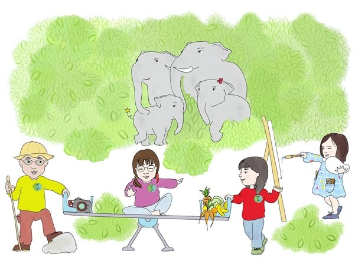

The people behind GSST
A small team with different strengths, working together to make thinking smarter simple, visible and practical.
Dr. Prem Kumar Chief Executive
GSST emerged from a pattern seen again and again: capable, committed teams solving the same problem, only for it to return in a different form. The work since has been about helping people see that pattern, and change it.
Prem is an author, researcher and organisational consultant whose career spans the private and public sectors, including community development. He helps individuals, teams and institutions build the capabilities to handle change, uncertainty and difficult choices. He has designed and facilitated programmes for governments in Singapore and overseas, as well as for businesses and community organisations.
His research grows out of that practice and explores how individuals, organisations and nations learn and develop. His interests include sustainable development, lifelong learning, systems thinking, leadership, and human and organisational development. He is also Adjunct Faculty at the Singapore University of Social Sciences (SUSS).
He has published on organisational and lifelong learning, governance and sustainability, and his work has appeared in the International Journal of Lifelong Education and in handbooks on adult learning and education published by Routledge and Palgrave. He is the author of The Learning Marketplace: East Meets West in Singapore and co-editor of Learning and Performance Matter, both published by World Scientific, and editor of Organisational Learning for All Seasons, the first anthology on organisational learning published in Singapore.
He holds a Doctorate from the University of Surrey, Master’s degrees from the University of Hull and The Fletcher School, Tufts University, and diplomas in adult education from the University of British Columbia and under Singapore’s Workforce Skills Qualifications framework. He also trained in the Gestalt approach to organisation and system development at the Gestalt Institute of Cleveland.
Some of the awards he has received are from Singapore’s Ministry of Culture, Community and Youth and the People’s Association, including the People’s Association Chief Executive’s Outstanding Award, as well as the SUSS Outstanding Teaching Award.

A small team, different strengths
Toh Le Yi, June Goh and Prem Kumar wrote both of our books: Thinking Smarter, for organisations, and Tiny Thinks Smarter, for younger readers, illustrated by Eleonora Rosta. The team's very different backgrounds reflect the books' own message: our differences are a strength.
- Toh Le Yi, co-writer, loves discovering new cultures and food, the spicier the better, and is always working out what balance means to her.
- June Goh, co-writer, is a spontaneous traveller who believes in a plant-based future.
- Eleonora Rosta, illustrator, can bring anything to life with her drawings, especially when it's for children.
- Dr. Prem Kumar, co-writer, loves walks in nature and reading, dabbles in chess and photography, and for the life of him cannot win at card games.